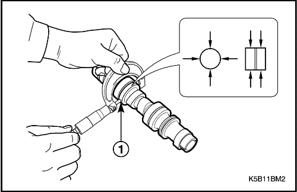
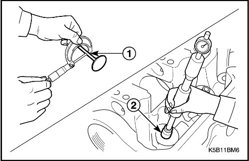
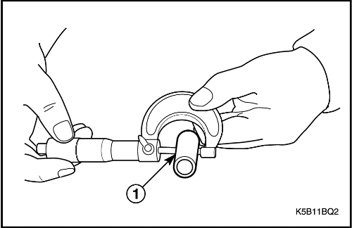

REPARACIÓN DE LOS COMPONENTES
Componentes de la culata y del tren de válvulas
(Se muestra el tipo característico, EURO III es similar)
Herramientas necesarias
Compresor de muelles de válvula 09916-14510.
Escariador de guías de válvula 09916-37320 (5 mm).
Escariador de guías de válvula 09916-38210 (11 mm).
Extractor de guías de válvulas 09916-44910.
Fijación del compresor de muelles de válvula 09916-48210.
Fijación del instalador de guías 09916-58210.
Fijación del instalador de guías de válvula 09917-88220.
Soporte de reparación del motor KM-412.
Procedimiento de desmontaje
- Desmonte la culata con el colector de admisión y el colector de escape unidos a la misma. Consulte los apartados "Culata y junta de culata", "Colector de admisión" y "Colector de escape" de esta sección.


- Desmonte el eje del balancín y el balancín.
- Retire los tornillos (1).
- Desmonte el eje del balancín (2).
- Desmonte el balancín (3).
- Desmonte el árbol de levas.
- Quite el tornillo (1).
- Desmonte el plato del árbol de levas (2).
- Desmonte el árbol de levas (3).
Aviso: Tenga mucho cuidado de no rayar, mellar o dañar el árbol de levas al desmontarlo.
- Retire del hueco de la carcasa el retén delantero del árbol de levas (4).
- Desmonte las chavetas de las válvulas.
- Use el compresor de muelles de válvula 09916-14510 con su fijación 09916-48210, para realizar la compresión de los muelles de válvula (1).
- Desmonte las chavetas de las válvulas (2).
- Desmonte las válvulas.
- Desmonte la chaveta de retención y los muelles de válvula (1).
- Desmonte las válvulas (2).
- Desmonte los retenes de aceite de los vástagos de las válvulas.
- Desmonte los retenes de aceite de los vástagos de las válvulas (1).
- Desmonte el asiento del muelle de válvula (2).
Importante: No reutilice los retenes que se hayan quitado. Los retenes que se hayan desmontado deben sustituirse por otros nuevos.

- Desmonte la guía de válvula.
- Coloque el extractor de guías de válvula 09916-44910 en la guía.
- Con la ayuda del extractor de guías de válvula 09916-44910, golpee y desmonte la guía de la cámara de combustión en dirección al muelle de válvula instalado.
Importante: La guía desmontada debe sustituirse por otra nueva que sea de sobremedida. No reutilice la guía de válvula que se haya quitado.

Procedimiento de inspección/medición/ajuste
Abrasión de la leva
- Use un micrómetro para medir la altura de la leva; cuando la válvula medida se encuentre por debajo del límite especificado, sustituya el árbol de levas.
Unidad: mm (pulg.)
Ítem | Estándar | Límite |
Altura de la leva | IN. | 35.156 (1.3841) | 35.124 (1.3828) |
EX | 34.814 (1.3706) | 34.789 (1.3696) |
Medición de la flexión del árbol de levas
- Utilice un reloj comparador para medir la flexión del árbol de levas y sustituya éste cuando supere del límite especificado.
Unidad: mm (pulg.)
Ítem | Límite |
Límite de flexión | 0.03 (0.0012) |

Abrasión de la muñequilla del árbol de levas
- Mida el diámetro exterior de cada muñequilla en 4 sitios diferentes (1).
- Use un calibre de interiores para medir el diámetro interior de la muñequilla de la culata en los 4 sitios (La holgura de la muñequilla se mide por la diferencia entre el diámetro exterior de la muñequilla del árbol de levas y el diámetro interior de la pieza de la muñequilla de la culata) (2).
- Sustituya el árbol de levas (o la culata, si fuera necesario) cuyo valor sobrepase el límite especificado.
Unidad: mm (pulg.)
Ítem | Estándar | Límite |
Holgura de muñequilla | 0.05-0.091 (0.0020-0.0036) | 0.15 (0.0059) |
Unidad: mm (pulg.)
Ítem | Diámetro exterior, muñequilla del árbol de levas | Diámetro interior, pieza de la muñequilla de la culata |
a | Estándar | 43.425-43.450 (1.7096-1.7106) | 43.500-43.516 (1.7126-1.7132) |
Límite | 43.375 (1.7077) | 43.525 (1.7136) |
b | Estándar | 43.625-43.650 (1.7175-1.7185) | 43.700-43.716 (1.7205-1.7211) |
Límite | 43.575 (1.7156) | 43.725 (1.7215) |
c | Estándar | 43.825-43.850 (1.7254-1.7264) | 43.900-43.916 (1.7283-1.7290) |
Límite | 43.775 (1.7234) | 43.925 (1.7293) |
d | Estándar | 44.025-44.050 (1.7333-1.7343) | 44.100-44.116 (1.7362-1.7369) |
Límite | 43.975 (1.7313) | 44.125 (1.7372) |
Flexión del eje del balancín
- Sírvase del reloj compararador y del bloque en V para medir del eje del balancín.
- Sustituya el eje de balancín cuya flexión supere el límite.
Unidad: mm (pulg.)
Ítem | Límite |
Límite de flexión | 0.10 (0.0039) |
Holgura entre el balancín y su eje
- Emplee un micrómetro para medir el diámetro exterior del eje del balancín (1).
- Use un reloj comparador para medir el diámetro interior del balancín (2).
- Sustituya el eje o el balancín (o ambos, si fuera necesario) si la diferencia supera el límite entre el diámetro exterior y el interior.
Unidad: mm (pulg.)
Ítem | Estándar | Límite |
Holgura entre el balancín y su eje | 0.005-0.040 (0.0002-0.0016) | 0.06 (0.0024) |

Holgura entre el vástago de la válvula y la guía de válvula.
- Emplee un micrómetro para medir el diámetro exterior del vástago de la válvula (1).
- Use un calibre de interiores para medir el diámetro interior de la guía de válvula (al menos un sitio en dirección al largo de la válvula) (2).
- Mida la holgura entre el vástago y la guía de válvula.
Unidad: mm (pulg.)
Ítem | Estándar | Límite |
Diámetro exterior del vástago de la válvula | IN. | 5.465 - 5.480 (0.2152-0.2157) | - |
EX | 5.440 - 5.455 (0.2142-0.2148) | - |
Diámetro interior de la guía de válvula | IN. | 5.500 - 5.512 (0.2165-0.2170) | 5.53 (0.2177) |
EX | 5.500 - 5.512 (0.2165-0.2170) | 5.53 (0.2177) |
Holgura entre el vástago y la guía | IN. | 0.020 - 0.047 (0.0008-0.0019) | 0.07 (0.0028) |
EX | 0.045 - 0.072 (0.0018-0.0028) | 0.09 (0.0035) |
- Si no dispone de un calibre de interiores, mida la holgura con un reloj comprobador moviendo la punta del vástago en dirección (a) y (b) (3).
- Si la válvula medida supera el límite, sustituya el vástago o la guía.
Unidad: mm (pulg.)
Ítem | Límite |
Punta de la válvula (a)↔ (b) Límite de holgura | IN. | 0.14 (0.0055) |
EX | 0.18 (0.0071) |
Válvula
- Elimine toda la carbonilla que tenga la válvula.
- Compruebe si la válvula o el vástago presentan abrasión, quemaduras o flexión, y haga las sustituciones necesarias.
- Abrasión de l punta de la válvula.
- Inspeccione la punta de cada válvula en busca de abrasión. Se podría producir abrasión desigual en la punta ya que, al funcionar, el balancín entra en contacto con esta superficie. Repare la sección en menos de 0,05 mm (0,002 pulg.) si fuera necesario, o sustituya la válvula si se precisa alguna otra modificación aparte de esa (1).
- Desviación del sentido de rotación (2).
- Mida la desviación del sentido de rotación mediante un reloj comparador y el bloque en V y haciendo girar la válvula poco a poco.
- Sustituya la válvula si el valor medido sobrepasa el límite.
Unidad: mm (pulg.)
Ítem | Límite |
Límite de desviación de la cabeza de válvula en el sentido de rotación. | 0.08 (0.0031) |

- Compruebe la anchura de contacto (3).
- Limpie la válvula y el asiento de válvula y aplique un poquito de tinta de marca de color rojo en la superficie de contacto del asiento de válvula. Compruebe el ajuste después de instalar el componente de válvula.
- Un contacto apropiado muestra la misma anchura de contacto dentro del valor especificado.
Unidad: mm (pulg.)
Ítem | Límite |
Anchura de contacto en la superficie del asiento de válvula. | IN. | 1.46 - 1.66 (0.0575 - 0.0654) |
EX | 1.46 - 1.66 (0.0575 - 0.0654) |
- Reparación del asiento de válvula (4).
- Para la reparación, amole y corte el asiento de válvula, y esmerílelo si su anchura de contacto no es igual o supera el valor especificado.
- Al aplicar la rectificadora de asiento de válvula, utilice primero la de menor ángulo y aumente el ángulo de la rectificadora hasta alcanzar la leve modificación final del contacto. Remate la superficie de contacto y su ubicación con la rectificadora de 45 grados.
Importante: Al realizar el corte, tenga cuidado con la anchura de contacto. Termine la operación de corte reduciendo gradualmente la potencia para no producir marcas de corte en la superficie.
- Lapeado de válvulas.
- Realice el lapeado en dos fases, el primero normal y el segundo con un lapeado fino por los dos lados.
- a. Lado de admisión.
- b. Lado de escape.
Culata
- Elimine toda la carbonilla de la cámara de combustión.
- Asegúrese de no arañar las lumbreras de admisión y escape de la culata, la cámara de combustión y la superficie de culata junto a los asientos de válvula.
- Planitud de la culata (1).
- Use una regla recta y un comprobador de espesor para medir la planitud en 6 sitios distintos. Si la medida, en rojo, supera el límite de uso, confirme la zona deformada colocándola en el plato plano y repárela con abrasivos delicados. Sustituya la culata cuya reparación no sea posible.
Aviso: La deformación de la superficie de la culata puede provocar la pérdida de potencia debido a la fuga de compresión.
- Mida la planitud de la superficie de la culata en cada uno de los cuatro lados y diagonales.
Unidad: mm (pulg.)
Ítem | Límite |
Límite de deformación de la planitud de la culata | 0.05 (0.0020) |
- Deformación de la superficie para el montaje del colector (2).
- Utilice una regla recta y el comprobador de espesor para inspeccionar la superficie a la hora de instalar el colector de la culata; sustituya la culata si fuera necesario.
Unidad: mm (pulg.)
Ítem | Límite |
Límite de deformación del colector | 0.10 (0.0039) |

Muelles de válvulas
- Los muelles debilitados pueden ser la causa de vibraciones, por no mencionar la posibilidad de disminuir la salida de potencia debido a la fuga de gas provocada por la reducción de presión en el asiento.
- Longitud de fabricación del muelle de válvula (1).
- Sustituya los muelles de válvula cuya longitud de fabricación sea inferior al límite.
Unidad: mm (pulg.)
Ítem | Estándar | Límite |
Longitud en reposo del muelle de válvula | 54.45 (2.1437) | 53.40 (2.1024) |
- Precarga del muelle (2).
- Sustituya los muelles de válvula cuya precarga sea inferior al límite.
Unidad: mm (pulg.)
Ítem | Estándar | Límite |
Precarga del muelle de válvula | 23.4-27.0 (0.9213-1.0630) | 22.0 (0.8661) |
- Cuadratura del muelle (3).
- Use una escuadra y una placa plana para medir la cuadratura de cada muelle.
- Sustituya el muelle de válvula cuya holgura supere el límite.
Unidad: mm (pulg.)
Ítem | Límite |
Cuadratura del muelle de válvula | 2.4 (0.0945) |
Procedimiento de montaje
- Use un escariador de guías de válvula 09916-38210 para hacer el orificio a la guía de válvula.
- Antes de montar una guía de válvula nueva en la culata, escaríe el orificio de la guía con un escariador de 11mm para eliminar las rebabas. Asegúrese de que los conos de los orificios de las guías quedan completamente redondos (1).
- Monte la guía de válvula.
- Para no deformar la culata, caliéntela homogéneamente a una temperatura de 80-100°C (176-212°F), e introduzca del todo la nueva guía de válvula en el orificio con el instalador de guías de válvula 09916-58210 y con su fijación 09917-88220.
- Granetee y monte la nueva guía de válvula (1).
- Tras el montaje, inspeccione la pieza de la guía que sobresale de la culata (2).
Importante: No vuelva a utilizar la guía de válvula una vez desmontada, sustitúyala por una guía nueva de sobremedida.
Unidad: mm (pulg.)
Sobremedida de la guía de válvula | 0.03 (0.0012) |
Guía de válvula que sobresale | 14 (0.5512) |
- Desmonte la camisa de la guía de válvula.
- Repare la camisa de la guía con el escariador de guías de válvula 09916-37320 (5 mm ó 0,1969 pulg.) (1).
- Libere el orificio de materias extrañas.
- Monte los retenes nuevos del vástago de válvula.
- Monte los asientos de los muelles de válvula (1).
- Monte el nuevo retén del vástago de válvula en la guía de válvula (2).
- Tras aplicar aceite de motor al retén y de montarlo en la guía de válvula, asegúrese de que el retén está bien fijado a la guía.
Importante: No vuelva a utilizar el retén de aceite desmontado, sustitúyalo por otro nuevo. Al montarlo, no golpee nunca la herramienta ni con un martillo ni con nada. Para instalarlo en la guía, presione la herramienta especial con la mano solamente. Cualquier tipo de golpe puede dañar el retén.
- Monte las válvulas.
Importante: Antes de montarla, recubra con aceite de motor los retenes del vástago, la guía y el vástago de la válvula.
- Monte la válvula en la guía (1).
- Monte los muelles de válvula y los retenes de muelle.
- Monte los muelles de válvula (1).
- Cada muelle de válvula dispone de un extremo superior (extremo grande) (a) y de un extremo inferior (extremo pequeño) (b). Coloque correctamente el muelle con el extremo inferior hacia abajo , en el lado del asiento del muelle de la válvula (2).
- Monte los retenes de los muelles de válvula (3).
- Monte las chavetas de las válvulas.
- Use el compresor de muelles de válvula 09916-14510 con su fijación 09916-48210, para realizar la compresión de los muelles de válvula (1).
- Monte la chaveta de la válvula (2).
Importante: Recubra con aceite de motor los retenes de aceite del vástago de válvula, el orificio de la guía y el vástago de la válvula.
- Monte el árbol de levas.
- Recubra de aceite de motor el retén de aceite delantero, la leva y la muñequilla del árbol de levas.
- Monte el retén delantero del árbol de levas en el hueco de la carcasa (1).
- Monte el árbol de levas en la culata (2).
Aviso: Tenga mucho cuidado de no rayar, mellar o dañar el árbol de levas al montarlo.
- Desmonte el plato del árbol de levas (3).
Apretar
Apriete el tornillo hasta 9-12 N•m (80-106 lb-pulg.).
- Monte los balancines y sus ejes.
- Recubra con aceite de motor los balancines y sus ejes.
- Monte los balancines y sus ejes (1).
- Coloque el tornillo (2).
Apretar
Apriete el tornillo hasta 9-12 N•m (80-Apriete los tornillos hasta 9-12 NSm (80-106 lb-pulg.). (Cubrir el Loctitte).
- Procedimientos a seguir al reparar los componentes del cigüeñal y los pistones:
- Desmonte el motor y la caja de cambios. Consulte el apartado "Conjunto del motor" de esta sección.
- Desmonte la caja de cambios del motor. Consulte la Sección 5B1, Caja de cambios manual de cinco velocidades.
- Desmonte el volante motor.
- - Monte el soporte de reparación del motor KM 412 en el conjunto motor como muestra el dibujo.
- - Extraiga el aceite del motor.
- Desmonte la culata. Consulte el apartado "Culata y junta de culata" de esta sección.
- - Desmonte del bloque del motor la bomba de aceite. Consulte el apartado "Bomba de aceite" de esta sección (en caso de reparar los componentes del cigüeñal).
Componentes del bloque del motor
Herramientas necesarias
Compresor de pistones 09916-77310
Procedimiento de desmontaje
- Desmonte los componentes acoplados alrededor del bloque motor.
- Desmonte la correa de la dirección asistida/aire acondicionado.
- Quite los tornillos y afloje un tornillo (lado inferior) (1).
- Gire hacia abajo el compresor del A/A.
- Quite el tornillo/tuerca del soporte trasero de la dirección asistida y el tornillo de ajuste (2).
- Quite los tornillos del soporte del compresor del A/A (3).
- Desmonte el compresor del A/A, la dirección asistida y el soporte.
- Desmonte el soporte (5).
- Afloje los tornillos del alternador (6).
- Afloje los tornillos inferiores del alternador y la tuerca (7).
- Desmonte el alternador y la correa (8).
- Afloje los tornillos del soporte superior de la fijación del motor (9).
- Desmonte la sujeción del alternador (10).
- Desmonte el soporte superior (11).
- Afloje los tornillos del soporte inferior de la fijación del motor (12).
- Quite el soporte inferior (13).
- Desmonte el cárter del aceite y el tubo de recogida de la bomba del aceite.
- Retire los tornillos (1).
- Quite las tuercas (2).
- Desmonte el cárter del aceite (3).
- Retire los tornillos (4).
- Desmonte el tubo de recogida de la bomba del aceite y el retén de aceite (5).
- Limpie las superficies del cárter del aceite y del bloque del motor.
- Desmonte las tapas de los cojinetes de biela.
- Haga girar el cigüeñal lentamente para que la cabeza de biela del cilindro nº 1 se quede arriba.
- Quite las tuercas (1).
- Desmonte las tapas de los cojinetes de biela (2).
- Introduzca el manguito guía en el lado del tornillo del espárrago de la biela para no dañar el pasador del cigüeñal ni la pared del cilindro (3).
- Marque el orden de las tapas de bancada del cigüeñal.
- Desmonte el semicojinete de biela inferior.
- Desmonte el pistón y la biela.
- Desmonte el pistón y la biela presionando el espárrago de la biela hacia la culata.
- Desmonte el cojinete superior de biela del pistón.
- Marque el orden de cilindro en el pistón y la biela.
- Disponga el pistón y la biela de los cilindros nº 2 y nº 3 según la secuencia, como se muestra en los procedimientos de 2 a 4.
- Desmonte los segmentos de engrase y de compresión, a continuación, desmonte la biela.
- Use un expansor de segmentos para expandir los segmentos del pistón, y desmóntelos.
- a. Segmento de compresión superior (nº 1).
- b. Segundo segmento de compresión (nº 2).
- c. Segmento de engrase del pistón (nº 3).
- Retire el circlip y extraiga el bulón para separar el pistón y la biela.
- d. Circlip
- e. Bulón del pistón.
- f. Pistón.
- g. Biela.
- h. Tapa del cojinete de la biela.

Procedimiento de inspección/medición/ajuste
Cilindro
- Limpie la pared del cilindro y compruebe si está rayada o presenta exceso de abrasión. Aplique un calibre con sobremedida cuando dicho daño supere el límite.
- Mida el diámetro interior del cilindro con el calibre de interiores en sentido longitudinal y transversal (1).
- Hay 3 ubicaciones de medición (a, b, c). Si sobrepasan los valores especificados, abocarde hasta la siguiente sobremedida (2).
Unidad: mm (pulg.)
Ítem | Límite |
Abocarde el diámetro del cilindro | Ø8,570 (2,700) |
Conicidad | 0,10 (0,0039) o menos |
Falta de redondez | 0,05 (0,002) y menos |
Importante: Las especificaciones de sobremedida serán variadas: 0,25, 0,50, 0,75 y 1,00. A la hora de abocardar y del montaje, la sobremedida debe ser la misma para el cilindro, el pistón y los segmentos. Debe mantenerse la misma sobremedida en los 3 cilindros.

Pistón
- Limpie el pistón con un paño suave y compruebe si presenta algún daño con el fin de determinar si hay que reemplazarlo.
- Use un micrómetro para medir el diámetro exterior del pistón. Compruebe el diámetro exterior del pistón en sentido perpendicular al bulón a 15 mm (0,5906 pulg.) de altura desde la falda (l).
Unidad: mm (pulg.)
Diámetro exterior de sobremedida del pistón | Estándar | Ø68,465-Ø68,485 (2,6955 - 2,6963) |
Sobremedida 0,25 | Ø68,715 - Ø68,735 (2,7053 - 2,7061) |
Sobremedida 0,50 | Ø68,965 - Ø68,985 (2,7152 - 2,7160) |

- Calcule el valor diferencial de la medida entre el diámetro interior del cilindro (50 mm (1,9685 pulg.) por debajo de la superficie de la culata) y el diámetro exterior del pistón (15 mm (0,5906 pulg.) por encima de la falda del pistón) (2).
Unidad: mm (pulg.)
Holgura del pistón | 0.025 - 0.045 (0.00098 - 0.00177) |
Importante: Al medir el diámetro interior del cilindro y el diámetro exterior del pistón, calcule los valores medidos en los mismos sentidos de giro del cigüeñal y del bulón del pistón.

Segmento del pistón
- Elimine la carbonilla y deje limpia la ranura antes de introducir el aro, y mida la holgura entre aro y área plana del aro con un comprobador de espesor. Si la medida sobrepasa el límite, sustituya el pistón (1).
Unidad: mm (pulg.)
Holgura del aro en la ranura | Segmento del pistón | Estándar | Límite |
Segmento de compresión | 0.02-0.06 (0.00079-0.0024) | 0.10 (0.0039) |
Segundo segmento de compresión | 0.02-0.06 (0.00079-0.0024) | 0.10 (0.0039) |
Segmento de engrase | 0.06 - 0.15 (0.0024-0.006) | - |

- Para medir el corte del segmento, introduzca el aro del pistón en el calibre del cilindro con el pistón, colocándolo en la parte inferior del calibre, a continuación, use una galga para medir la distancia. Si la medida del corte sobrepasa el límite, sustituya el aro (2).
Unidad: mm (pulg.)
Holgura del aro en la ranura | Segmento del pistón | Estándar | Límite |
Segmento de compresión | 0.15-0.30 (0.0059-0.0120) | 0.70 (0.0280) |
Segundo segmento de compresión | 0.3-0.45 (0.012-0.018) | 0.70 (0.0280) |
Segmento de engrase | 0.20-0.70 (0.0079-0.0280) | 1.80 (0.0709) |

Bulón del pistón
- Mida la holgura entre el bulón y la pieza de tetón del pistón, y si la medida sobrepasa la estándar, sustituya el bulón (1).
Unidad: mm (pulg.)
Ítem | Estándar |
Diámetro exterior del bulón del pistón | 15.995-16.000 (0.6297 - 0.6299) |
Diámetro interior del tetón del pistón | 16.006-16.014 (0.6302-0.6305) |
Holgura del bulón del pistón | 0.006-0.019 (0.0002-0.0007) |
Bielas
- Compruebe la holgura de empuje en la cabeza de cada biela, con la biela montada y conectada al apoyo de bancada de manera normal. Si resulta que la holgura medida sobrepasa el límite o se descubre algún daño en la superficie de empuje de los dos extremos, debe sustituirse la biela responsable o el cigüeñal (1).
Unidad: mm (pulg.)
Holgura de empuje de la cabeza de biela | Estándar | Límite |
0.10-0.25 (0.0039-0.010) | 0.35 (0.0138) |
- Compruebe la flexión y la torsión de la biela con el alineador de biela, y si sobrepasa el límite, sustitúyala.
Unidad: mm (pulg.)
Ítem | Límite |
Flexión (a) | 0,05 (0,0020) (en caso de 100 mm (3,937 pulg.)) |
Torsión (b) | 0,10 (0,0039) (en caso de 100 mm (3,937 pulg.)) |
- Holgura del cojinete (3).
- Inspeccione el semicojinete para ver si presenta signos de daño, fusión, quemadura, etc. y observe el patrón de contacto. Sustituya los cojinetes que durante la inspección se hallen defectuosos.
- Use una tira de Plastigauge para medir la holgura de aceite. Corte un trozo de Plastigauge de igual anchura que la del cojinete y colóquelo axialmente en el apoyo de bancada, esquivando el taladro de engrase.
- a. Plastigauge
- Monte el cojinete de biela y la tapa del cojinete y apriete hasta el par especificado. En este punto, no haga girar ni mueva el cigüeñal.
- b. Cojinete de biela.
- c. Tapa del cojinete.
Apretar
Apriete las tuercas de las tapas de cojinete de biela hasta 31-35 N•m (23-25 lb-pie).
- Retire la tapa y mida la anchura de Plastigauge con la escala dibujada en la caja del Plastiguage. La medición debe hacerse en la parte más ancha de la compresión; preste atención a los distintos valores medidos a ambos extremos del Plastigauge.
Unidad: mm (pulg.)
Holgura de aceite del cojinete | Estándar | Límite |
0.020-0.040 (0.00079 - 0.00157) | 0.065 (0.00256) |
- Si la holgura de aceite sobrepasa el límite, sustituya los cojinetes.
Unidad: mm (pulg.)
Dimensiones del cojinete | Dimensiones | Estándar |
Diámetro exterior del apoyo de bancada | 37.982-38.000 (1.4954-1.4961) |
Cigüeñal
- Desmonte el bloque del motor.
- Desmonte la carcasa del retén de aceite trasero del cigüeñal.
- Quite las tuercas y tornillos (1).
- Retire la junta y la carcasa del retén (2).
- Desmonte las tapas de bancada del cigüeñal.
- Retire los tornillos (3).
- Desmonte el cojinete y su tapa (4).
- Tras desmontar el cigüeñal, desmonte el cojinete superior.

- Excentricidad del cigüeñal.
- Mida la excentricidad con el bloque en V y el reloj comprobador en el muñón central girando lentamente el cigüeñal. Si la excentricidad sobrepasa el límite, sustituya el cigüeñal (1).
Unidad: mm (pulg.)
Límite de excentricidad | 0.03 (0.0012) |
Importante: Con el fin de medir la excentricidad, haga girar el cigüeñal una vez para que coincida con el reloj comprobador en la pieza del muñón; realice la lectura y reste la mitad del valor máximo del comprobador.
- Juego de empuje del cigüeñal
- Monte los cojinetes de empuje y los de bancada del cigüeñal en el bloque motor y apriete el tornillo de la tapa como se especifica, a continuación, mida el juego axial del cigüeñal. Si la medida sobrepasa el límite, sustituya el cojinete de empuje con la nueva medida estándar o la siguiente sobremedida (2).
Unidad: mm (pulg.)
Juego de empuje del cigüeñal | Estándar | Límite |
0.11-0.31 (0.0043-0.0122) | 0.4 (0.0157) |
- Falta de redondez y conicidad (desgaste desigual) del muñón.
- Mida las fluctuaciones de diámetro del muñón en el sentido del eje y del ángulo derecho del cigüeñal y verifique el desgaste desigual. Si se descubre cualquier daño grave o la desviación y desviación parcial sobrepasa el límite, pula el cigüeñal para repararlo o sustitúyalo (3).
Unidad: mm (pulg.)
Límite de falta de redondez y conicidad | 0.01 (0.00039) |
- Holgura de aceite del cojinete de bancada (4).
- Compruebe si la superficie en contacto está desgastada, quemada, rayada, etc. y sustitúyala si fuera necesario.
- Corte un trozo de Plastigauge igual de largo que la anchura del cojinete y colóquelo axialmente en el muñón, esquivando el taladro de engrase.
- a. Plastigauge.
- Monte el cojinete de bancada y la tapa y apriete según se especifica. En este punto, no haga girar el cigüeñal.
- b. Cojinete del cigüeñal.
- c. Tapa del cojinete.
Apretar
Apriete el tornillo de la tapa del cojinete de bancada hasta 55-60 N•m (41-44 lb-pie).
- Retire las tapas y mida la anchura del Plastigauge con la escala dibujada en la caja del Plastiguage. La medición debe hacerse en la parte más ancha de la compresión; preste atención a los distintos valores medidos a ambos extremos del Plastigauge. Si la holgura de aceite sobrepasa el límite, sustituya el cojinete.
Unidad: mm (pulg.)
Holgura de aceite para los cojinetes del cigüeñal | Estándar | Límite |
0.020-0.040 (0.00079-0.00157) | 0.065 (0.00256) |

Unidad: mm (pulg.)
Ítem | Estándar |
Diámetro exterior del muñón del cigüeñal | 43.982-44.000 (1.7316-1.7323) |
- Compruebe si los labios del retén están desgastados, dañados o presentan materias extrañas. Sustituya los elementos deteriorados (5).
Volante motor
- Compruebe si hay grietas o desgaste anormal en la pieza de la corona o en la superficie de contacto del plato del embrague. Sustituya el volante motor si fuera necesario.
- Mida la excentricidad del volante motor con un bloque y un reloj comprobador, y sustitúyalo si la excentricidad sobrepasa el límite (1).
Unidad: mm (pulg.)
Límite de excentricidad | 0.2 (0.0079) |
Bloque del motor
- Use el comprobador de espesor y una regla recta para realizar la medición en 6 lugares distintos empleando el mismo método que para la culata (1).
- Pula y repárelo si la distorsión, flexión o la torsión sobrepasa el límite. Si necesita pulir más de 0,15 mm (0,0059 pulg.), sustitúyalo por uno nuevo.
Importante: Preste atención a la planitud de la superficie entre las cámaras de combustión.
Unidad: mm (pulg.)
Límite de distorsión del cilindro | 0.05 (0.0020) |
Planitud estándar | 0.03 (0.0012) |
Aviso: La deformación de la superficie de la culata puede provocar la pérdida de potencia debido a la fuga de compresión.
Importante: Mida la planitud de la superficie de la culata en cada uno de los cuatro lados y diagonales.
Procedimiento de montaje
- Monte el cojinete de empuje de bancada y el cojinete principal superior, a continuación, monte el cigüeñal en el muñón.
- Unte aceite de motor en la ranura de aceite y monte el cojinete de empuje de bancada para situar la ranura en la parte exterior del muñón (1).
- a. Ranura de aceite.
- Monte los cojinetes principales del cigüeñal superior en el muñón del cigüeñal con la boca de aceite del cojinete en el sentido del filtro de aceite (2) (monte los cojinetes del cigüeñal inferior de forma idéntica al colocar la tapa de cojinetes).
- b. Boca de aceite del cojinete.
Importante: Al montar el cojinete, aplique aceite de motor a la superficie interior del cojinete o del muñón del cigüeñal (lado del apoyo de bancada).
- Coloque el cigüeñal en el muñón del bloque motor.
- Monte la tapa del cojinete de bancada con el semicojinete principal inferior de bancada montado en el muñón del cigüeñal.
- En la tapa del cojinete de la pieza del muñón del cigüeñal, aparecen marcados en secuencia del número 1 al 4.
- Monte el semicojinete principal inferior de bancada en la pieza del muñón del cigüeñal (1).
- Monte la tapa del cojinete en la pieza del muñón con sus tornillos según la secuencia mostrada (2).
Apretar
Apriete los tornillos de la tapa del cojinete hasta 55-60 N•m (40-44 lb-pie).
- Monte la junta y la carcasa del retén de aceite trasero del cigüeñal.
Importante: No reutilice la junta que se desmontó y sustitúyala por una nueva.
- Monte la junta de la carcasa del retén del aceite (1).
- Monte la carcasa del retén trasero del cigüeñal después de aplicar aceite de motor al labio del retén (2).
- Si los bordes de la junta están dilatados, córtelos con un rascador.
Apretar
- Apriete los tornillos hasta 9-12 N•m (80-106 lb-pulg.).
- Apriete los tornillos hasta 9-12 N•m (80-106 lb-pulg.) (cubrir el Loctitte).
- Monte la bomba de aceite con la junta (en caso de reparación del cigüeñal).
Importante: No reutilice la junta que se desmontó y sustitúyala por una nueva.
- Monte la junta de la bomba del aceite (1).
- Introduzca el manguito en el cigüeñal para no dañar el retén de la bomba del aceite al montar la bomba (2).
- Monte la carcasa de la bomba de aceite con sus tornillos (3).
Apretar
Apriete los tornillos hasta 9-12 N•m (80-106 lb-pulg.).
- Si los bordes de la junta están dilatados, córtelos con un rascador.
- Monte el pistón y la biela.
Importante: Hay que seguir unas direcciones en el montaje del pistón y la biela. Dirija la marca delantera del pistón (→) (a) de la cabeza del pistón hacia la polea del cigüeñal y hacia el colector de admisión (b) de la biela hacia el colector de salida para montar el pistón y la biela.
- Monte el bulón (1).
- Sujete el bulón con los circlips (2).
- Monte el segmento de compresión y el de engrase en el pistón.
- Al montar el segmento de engrase, introduzca primero el espaciador y luego dos rieles (1).
- Monte el segundo segmento de compresión para dirigir el lado de la R marcada hacia arriba (2).
- Monte el segmento de compresión (3).
- Monte los tres segmentos y coloque sus aberturas tal y como se muestra en la fig. K5B11BS4.
- a. Abertura del segmento de compresión (nº 1).
- b. Abertura del segmento de compresión (nº 2).
- c. Abertura del riel del segmento de engrase (riel superior)
- d. Abertura del espaciador del segmento de engrase
- e. Abertura del riel del segmento de engrase (riel inferior)
- f. Marca
- g. Cabeza del pistón
- Monte el conjunto del pistón y la biela.
- Aplique aceite de motor al pistón, el segmento, la pared del cilindro y el apoyo de bancada del cojinete de la biela.
- Coloque el pistón dentro del cilindro de modo que el punto de la flecha apunte en dirección a la polea del pistón (1).
- Antes de montar el conjunto de biela y pistón, compruebe que el manguito está bien insertado en el espárrago de biela de modo que no pueda dañar la pared del cilindro y el apoyo de bancada del cojinete.
- Frunza el aro del pistón con el compresor de pistón 09916-77310 y coloque adecuadamente la biela y el pistón en el cilindro. En este punto, empuje el compresor de pistón 09916-77310 contra el bloque del motor e introduzca ligeramente el pistón (2).
- Monte la biela tal y como se muestra en el dibujo.
- Monte el semicojinete superior de biela en la muñequilla de biela del cigüeñal.
- Monte la tapa del cojinete con el semicojinete inferior montado en la pieza de apoyo de bancada del cigüeñal.
- Monte el semicojinete principal inferior de bancada en la pieza de apoyo de bancada (1).
- Coloque la tapa en la pieza de apoyo de bancada de modo que la punta de la flecha quede en dirección a la polea del cigüeñal, según la secuencia, tras colocar el pistón en punto muerto inferior (BDC) (2).
Apretar
Apriete las tuercas de la tapa del cojinete hasta 31-35 N•m (23-25 lb-pie).

- Monte el tubo de recogida de la bomba del aceite y el cárter del aceite.
- Monte el tubo de recogida de la bomba de aceite con sus tornillos (1).
Apretar
Apriete los tornillos del tubo de recogida de la bomba de aceite hasta 9-12 N•m (80-106 lb-pulg.).
- Aplique la junta líquida en el bloque del motor.
- Monte el cárter del aceite con sus tornillos y tuercas (2).
Apretar
Apriete las tuercas y los tornillos hasta 9-12 N•m (80-106 lb-pulg.) (cubrir el Loctitte).
- Instale los componentes desmontados.
- Monte el soporte inferior del alternador y el propio alternador con sus tornillos (1).
Apretar
Apriete los tornillos hasta 35-41 N•m (25-30 lb-pie) (a).
- Monte el soporte superior de la fijación del motor y la sujeción del alternador con sus tornillos (2).
Apretar
Apriete los tornillos hasta 35-41 N•m (25-30 lb-pie) (b).
- Monte el alternador con sus tornillos y su tuerca (3).
- Monte la correa del alternador.
Apretar
- No apriete mucho los tornillos inferiores y la tuerca, apriete hasta 18-28 N•m (13-21 lb-pie) (c).
- Apriete el tornillo de ajuste de tensión de la correa del alternador hasta 18-28 N•m (13-21 lb-pie) (d).
- Monte el soporte de fijación del motor (4).
- Monte la bomba de la dirección asistida/compresor de A/A y el soporte con sus tornillos (5).
Apretar
- Apriete el tornillo del soporte hasta 18-22 N•m (13-16 lb-pie) (e).
- Apriete los tornillos del soporte hasta 35-41 N•m (25-30 lb-pie) (f).
- Monte el soporte de la bomba de la dirección asistida con su tornillo/tuerca y el tornillo de ajuste (6).
Apretar
- Apriete el tornillo del soporte trasero de la dirección asistida hasta 18-22 N•m (13-16 lb-pie) (g).
- Apriete el tornillo de ajuste y la tuerca del soporte trasero de la dirección asistida hasta 20-24 N•m (15-18 lb-pie) (h).
- Coloque el compresor del A/A en su sitio.
Apretar
- Apriete los tornillos hasta 18-22 N•m (13-16 lb-pie) (i).
- Apriete el tornillo hasta 20-24 N•m (15-18 lb-pie) (j).
 | |  | |
| © Copyright Chevrolet Europe. Reservados todos los derechos |